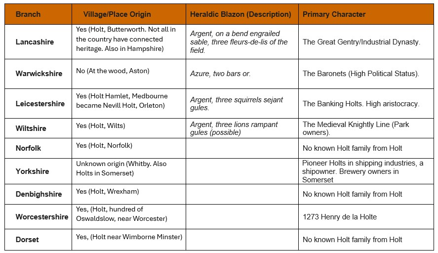

Geographical Holts
The Origin of the "Holt" Surname in Old English, the word holt simply means a small wood, thicket, or grove. Because
the British landscape was once heavily covered in these small woods, several different settlements ended up being
named "Holt" including the ones in Lancashire, Leicestershire, Wiltshire, Norfolk and other locations.
Because of this, the surname popped up completely independently in these different places. A family named Holt from
Norfolk usually has no genetic or historical relation to a Holt family from Wiltshire; they just happened to originate
from a similarly named town or live near a grove of trees!
This guide looks at the geographical locations and shows where there are lineages of the Holt name. While they share a surname derived from the Old English word holt (a wood or grove), they represent distinct genetic and social groups that took root in different corners of the kingdom.
| Branch | Place Origin | Heraldic Blazon (Description) | Primary Character |
|---|---|---|---|
| Lancashire | Holt, Butterworth. Not all in the country have connected heritage. Also in Hampshire | Argent, on a bend engrailed sable, three fleurs-de-lis of the field. | The Great Gentry/Industrial Dynasty. |
| Warwickshire | At the wood, Aston | Azure, two bars or. | Baronets (High Political Status). |
| Leicestershire | Holt Hamlet, Medbourne became Nevill Holt, Orleton | Argent, three squirrels sejant gules. | The Banking Holts. |
| Wiltshire | Holt, near Bradford-on-Avon | Medieval Knightly Line (Park owners). | |
| Norfolk | Holt, Norfolk | No known Holt family from Holt. | |
| Yorkshire / Somerset | Whitby | Pioneer Holts in shipping industries, a shipowner. Also family descent brewery owners in Somerset. | |
| Denbighshire | Yes (Holt, Wrexham) | No known Holt family from Holt. | |
| Worcestershire | Holt, hundred of Oswaldslow, near Worcester | 1273 Henry de la Holte. | |
| Dorset | Holt near Wimborne Minster | No known Holt family from Holt. |
